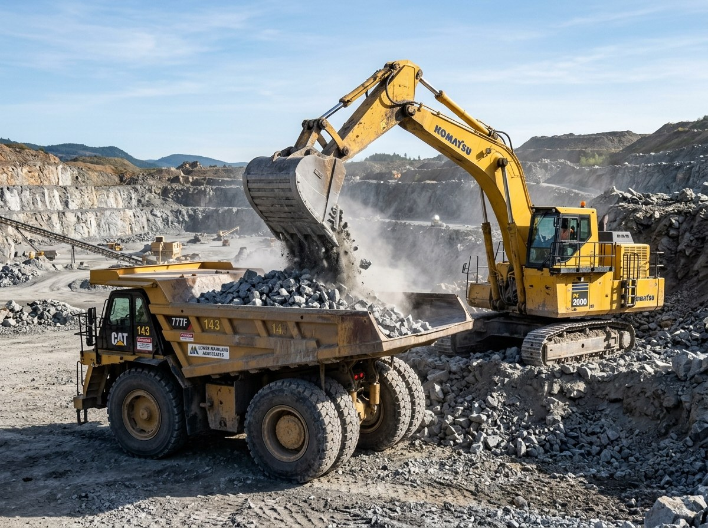
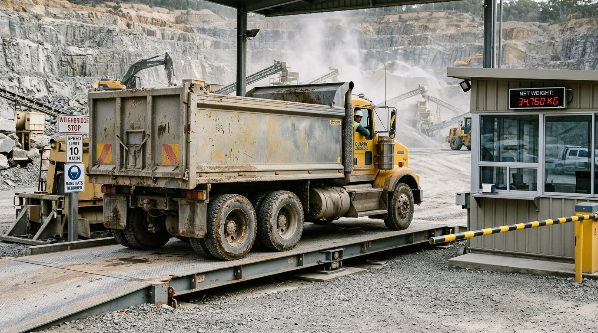
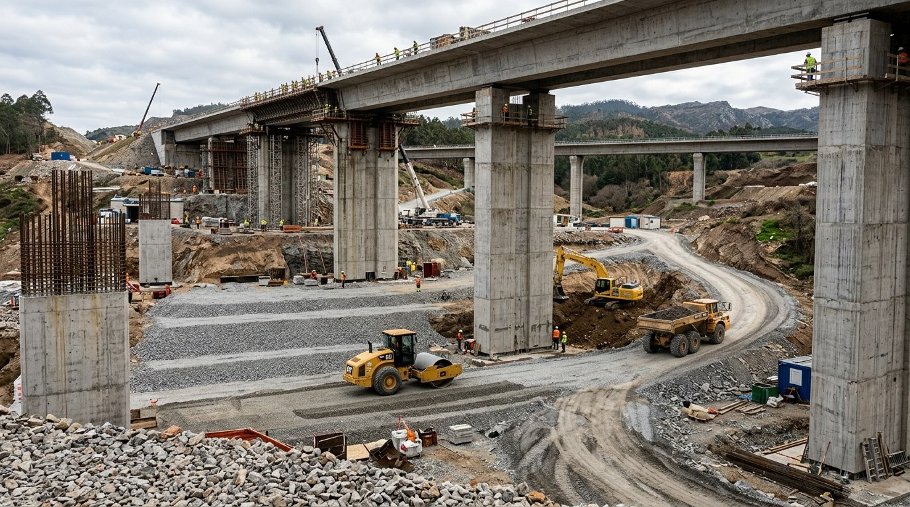
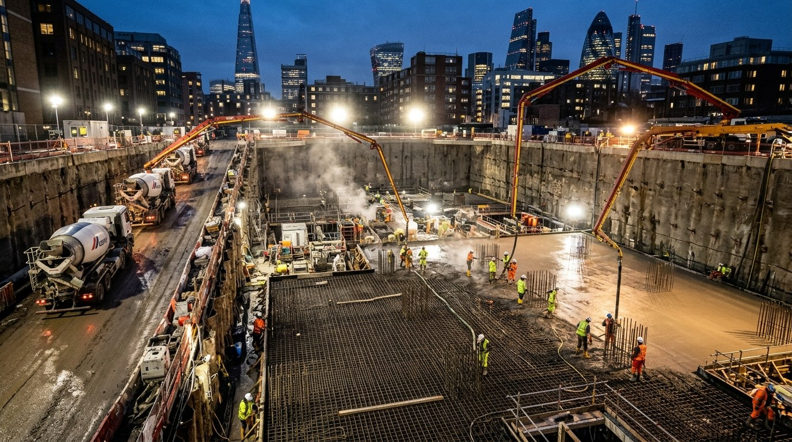

Stage 01 // T-Minus 6 Hrs
1. Quarry Extraction
Electronic delay-detonated bench blasting of unweathered dark Deccan basalt with zero overburden clay contamination.
Concrete pours and highway paving schedules cannot wait on delayed tippers or short-weighed loads. We operate our own crushing plants, NABL weighbridges, and 68 GPS-monitored dump trucks.



Full traceability from controlled basalt bench extraction to hydraulic tipping at your project coordinates.
Electronic delay-detonated bench blasting of unweathered dark Deccan basalt with zero overburden clay contamination.
3-stage jaw, cone, and Vertical Shaft Impactor crushing followed by 4-deck vibrating screens and hydro-cyclone washing.
Payload-calibrated wheel loaders fill tippers before automated gross/tare weighing and microwave moisture deduction.
Tarpaulin-sealed tippers depart with government Royalty Transit Passes, e-Way bills, and live WhatsApp ETA links.
Trained heavy-vehicle spotters guide hydraulic tipping into designated bays followed by digital Proof of Delivery sign-off.
Filter completed deliveries across highway infrastructure, commercial towers, and luxury residential townships.

Supplied 142,000 MT of MoRTH Grade-I GSB and 20mm/12mm structural basalt for 38 pier caps and deck slabs.

36-hour non-stop night dispatch of 4,800 MT hydro-washed VSI M-Sand and low-flakiness 20mm basalt to 3 RMC plants.
28,500 MT of Zone II Natural River Sand, Zone III Super-Fine Plastering Sand, and decorative drainage cobbles.
64,000 MT of high-CBR Granular Sub-Base and 12mm laser-screed floor aggregate for FM2 super-flat industrial slabs.
95,000 MT of cubical VSI M-Sand and 20mm/10mm blended basalt meeting stringent M60 early-strength steam-curing norms.
52,000 MT of 150–300mm low-absorption basalt boulders and 40mm geotextile filter media for flood embankment armor.
Why tier-1 civil contractors and RMC batching plants lock annual supply agreements with GRITLINE.
We never rely on unverified third-party brokers. Every tipper and loader is company-owned, GPS-tracked, and maintained in our quarry workshop.
Compact hydraulic tippers engineered for narrow urban residential lanes and tight basement ramps.
Versatile mid-size tandem axle dump trucks ideal for commercial building plots and municipal road contracts.
Heavy-duty 280 HP rock-body tippers built for high-volume RMC batching silos and highway GSB spreading.
Articulated 3.5 m³ rock-bucket loaders equipped with hydraulic load-cell scales to prevent under/over-loading at the bay.
Green-building (IGBC / LEED) projects require documented responsible mineral sourcing. Here is how our quarries protect local ecosystems.
Slurry from our M-Sand washing plant passes through thickener tanks and filter presses, recycling 88% of process water and turning silt cake into brick-making clay.
All primary jaw and VSI crushers are fully sheet-enclosed with dry-fog micron mist cannons, keeping PM10 particulate levels 40% below State Pollution Control Board limits.
Our river sand comes exclusively from government-auctioned desilting leases, while our VSI M-Sand saves over 450,000 tons of natural river ecosystems annually.